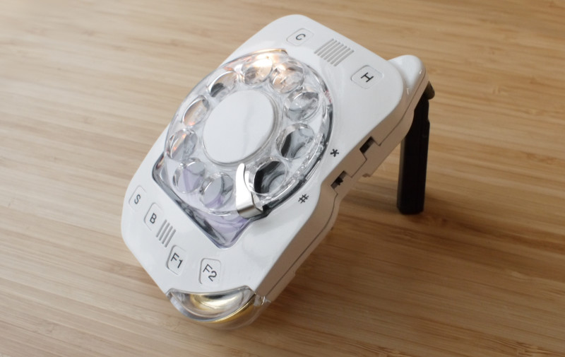
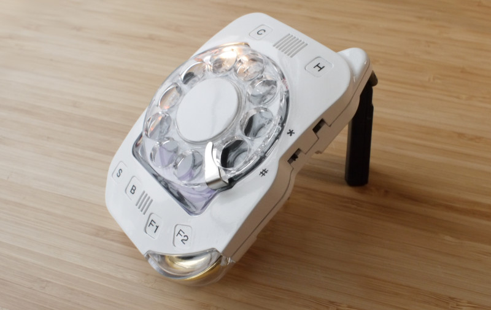

Rotary Un-Smartphone™ BETA Kit

spacer
The Rotary Un-Smartphone is a followup to this personal project. It's a production-ready ground-up design with all new parts (yes, the rotary dial too) and many neat bells and whistles.
Documentation:
Open Source Files:


 
 
Network Compatibility

READ
Q: Do I need to know electronics? What skills are required
for assembly? Can anyone build it?
A: No soldering is required, but it's an advanced build. To get a sense of what's involved, look through the assembly instructions (above).
Q: What comes with the kit?
A: Everything you need to make a complete, working phone. Just supply a SIM card from your cell carrier (in theory... see note above in red).
Q: Will a ready-built version be available in the future?
A: I think so.
Q: What size SIM card does it take?
A: The typical "Mini SIM" size.
Q: Who designed this?
A: All design -- electrical, mechanical, and software -- was entirely by Justine Haupt (Sky's Edge is my creative outlet).
Q: Can I order specific parts (not the whole kit), and make the rest myself?
A: Sure! Or, if you love doing things from scratch, you can use the design files to make the entire thing on your own. It's open source.
Q: Everyone's talking about 5G. Will this work on the 5G networks?
A: This is a fully-modern LTE device supporting Voice over LTE (VoLTE). 5G mainly adds mm-wave high-bandwidth service capabilities for extremely fast data rates, but this is not a useful feature for a voice-only cell phone like the Rotary Un-Smartphone. Because LTE is the backbone upon which 5G is built, the infrastructure for voice, text, and lower-bandwidth data transfer that LTE provides will exist for years to come. There's no disadvantage to using an LTE phone on the 5G networks, despite the wireless companies' seeming desperation in pushing 5G.
Q: My region is still using 3G, and will be for some time. Will the RUSP work for me?
A: Yes, the Rotary Un-Smartpthone will fall-back to 3G if LTE service is unavailable.
Q: Is the battery replaceable?
A: Considering it's a "kit" phone, I would argue that it's replaceable by default, although it does require disassembly and easy soldering. This phone will run on any single-cell LiPo battery that will fit in the space, whether it comes from Sky's Edge or a third-party. As shipped, the battery capacit is 1000mAh.
Q: What's the chipset?
A: The microcontroller is an ATMega2560V (or 1280V, depending on supply) running an Arduino bootloader. The cellular modem is a uBlox LARA-R6401 (N. American), LARA-R6801 (EMEA/APAC+), or LARA-R6001 (global version). All versions should work in all regions to some degree, but the specific regional variants are optimized for carriers and bands associated with those regions.
Q: In what ways is it a more functional telephone than a smartphone?
A:- Better reception because the antennas aren't packed against the electronics.
- You don't have to navigate an operating system to get to the phone "application".
- You can assign two buttons to be hard-coded for quick dialing your favorite people. Your spouse, parent, or child can be a single button-press away.
- The point of the phone isn't to use the rotary dial every time you call someone, which would get tiresome fast. You can store your contacts list and then dial up your friends with just two spins of the dial. When the less frequent need to dial a new number arises, the novelty of the satisfying-to-use rotary dial is fun rather than annoying.
- Previously, phones with physical keys required a clamshell (flip) form-factor to prevent unintended dialing. Rotary dials are naturally resistant to butt dialing.
- Nearly instantaneous 10-segment display of signal strength or battery level. Compare to typical 4-bar signal meters.
- The rear ePaper display (for displaying contacts) is bistatic, meaning it doesn't take any energy to display a fixed message.
- The power switch is an actual slide switch. No holding down a stupid button to make it turn off and not being sure it really is turning off or what.
- Physical cut-off switch for the microphone. Thank you Edward Snowden.
~Justine